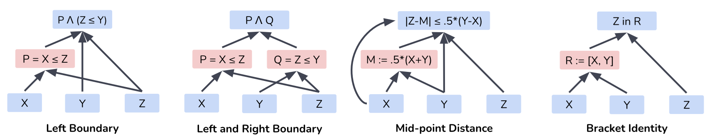
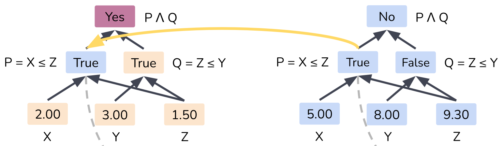
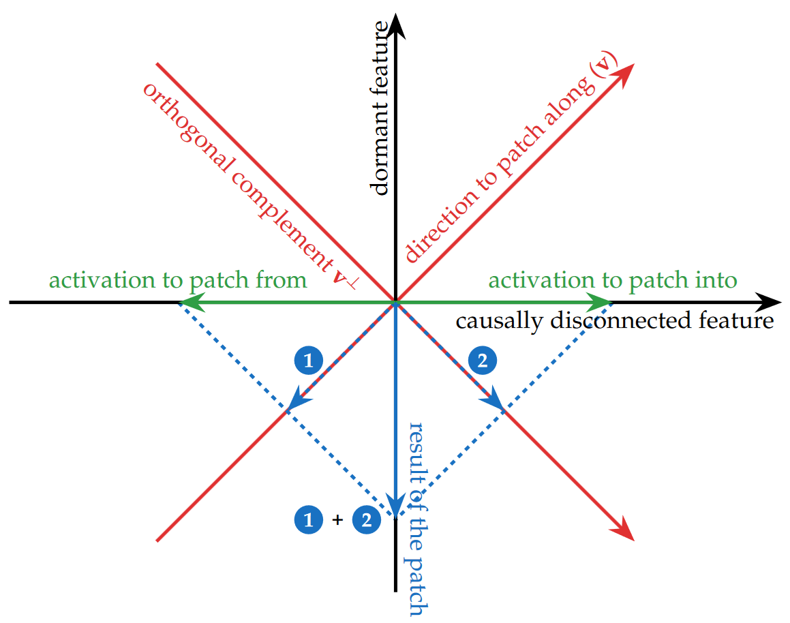
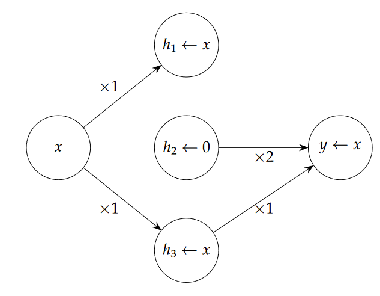

Distributed Alignment Search: Identifying Causal Mechanisms
October 31, 2024 • Lucas Laird
The theory of causal abstraction provides a general framework for assessing the degree to which complex models (e.g. neural networks) implement a simpler interpretable causal model. The goal of causal abstraction is to identify high-level simple causal mechanisms that abstract away from the irrelevant low-level details of a complex model. For any given task there may be many valid candidate causal model abstractions which may be implemented by the model. Distributed alignment search(DAS) provides a method for faithfully assessing which of these abstractions match the causal properties of the complex model.
Causal Model Abstractions
A causal model consists of causal variables \(S = {s_1, s_2, ..., s_k}\) which take on certain values for a given input \(b\) according to the model's causal mechanisms. Four examples of causal models are shown for determining whether the input \(z\) lies between two boundary values \(x\) and \(y\) by Wu et al.. The first model Left Boundary has a single causal variable \(P = X \leq Z\) which can take the values of True or False. The mechanism for this model then combines this along with the check \(Y \leq Z\) to produce an output. All of these causal models can solve the task but how do we know which one is actually implemented by a neural network? 
We can use counterfactual interventions to test how closely a causal model matches the behavior of our complex model. Interchange interventions change the value of a causal variable so that it takes the value it would normally have for a different input. For example consider the Left and Right Boundary model above with boundaries \(X=2, Y=3\) and input \(Z = 1.5\). There are two causal variables which take values \(P =\text{True}\) and \(Q =\text{True}\) resulting in a model output of True. Now consider the same model but with boundaries \(X'=5, Y'=8\) with input \(Z' = 9.3\). We will now have causal variables \(P' =\text{True}\) and \(Q' =\text{False}\) resulting in an output of False. If we interchange \(P\) for \(P'\) in the original case, we will still receive an output of True. This interchange allows us to test how the model would act given a counterfactual setting where some of the causal variables have taken on new values. 
If our neural network implements this causal mechanism then we expect the same behavior when we patch the activations to change the causal variable representation in the same way. It is not clear however if our neural network represents these causal variables and even if it does, how do we patch the activations to induce a change in the causal value? Geiger et al. propose distributed alignment search (DAS) as a method for doing exactly this.
DAS and BoundlessDAS
DAS works by assuming that every causal variable is represented by some linear subspace of the internal representations in the neural network. Since these causal variables are independent, these subspaces must be orthogonal to each other. Suppose causal variable \(s_1\) is represented in the linear subspace \(Y_1 = \mathbb{R}^d\). Assuming approximately linear representations, we know there is a rotation \(R\) of the full representation space which aligns the representation of \(s_1\) to be entirely within the first \(d\) entries. Now if we want to interchange only the causal values in the neural model, we swap the activations projected onto our subspace \(Y_1\). The degree to which this causal model explains the neural network is measured as the interchange intervention accuracy (IIA). IIA is simply the proportion of the time the interchange intervention on the causal model produces the same output as with the neural network. It is defined: \[\text{IIA} = \sum_{s_1,...,s_k} [\tau(\text{DII}(N, R, \{s_i\}_{1}^k, \{Y_j\}_1^k)(b) = \text{IntInv}(A, \{s_i\}_1^k, \{Z_i\}_1^k)(b))]\]
In this \(N\) is our neural network, \(A\) is our causal model, \(\tau\) maps the output of our neural network to the true/false output of \(A\), and \(b\) is the input we are evaluating over. DII is the aligned interchange from above and IntInv is the intervention interchange from the prior section.
How do we actually find the rotation \(R\) though? DAS learns \(R\) by proposing a dimension \(d\) for \(Y_i\) and then optimizing via gradient descent to maximize IIA. This is a very arduous task for larger representations however as the value of \(d\) is determined through exhaustive search and must be done separately for every causal variable individually. Wu et al. propose BoundlessDAS which learns \(d\) for each causal variable simultaneously and the associated \(R\) alignment. They do this by learning dimensions \(d_i\) and a binary mask \(M_i\) which encodes the orthogonal decomposition into the subspaces \(Y_i\). They then relax the DII into SoftDII which is a differentiable relaxation to allow for end-to-end learning of these values and \(R\) simultaneously.
Critiques of Causal Abstraction
Interpretability Illusions
Some criticisms of causal abstraction methods have been raised, particularly by Makelov et al.. They state that activation patching and orthogonal subspace decomposition may activate dormant circuits within a neural network that produce the desired behavior but do not encode the proposed causal variables. The central idea is that activation interventions along a certain direction \(v\) can be decomposed into two separate orthogonal directions: disconnected \(v_{\text{disc}}\) and dormant \(v_{\text{dorm}}). The direction \(v_\text{disc}\) is a direction that is in the nullspace of the downstream weight matrix. This means that any interventions along that direction result in no change to the downstream activations and are therefore "causally disconnected" in the model. The activations for two different inputs along \(v_{disc}\) can be different and so they can be distinguished but since they are causally disconnected this difference does not change the ultimate behavior. The direction \(v_\text{dorm}\) is an orthogonal direction which is in the rowspace of the downstream weight matrix. The activations for every data input along \(v_{disc}\) are equal however and so the model does not utilize this direction to distinguish outputs in standard cases. An intervention along the original direction \(v\) however can induce a change along the the dormant direction due to the differences along the disconnected direction resulting in behavior which matches the expected causal mechanism despite there being no causally connected encoding of the causal variables in the model. They call this behavior an "interpretability illusion" when the intervention along \(v\) produces a significant change in output but there is a very small change in output when the intervention is limited only along \(v_{dorm}\). To demonstrate this phenomena, the Makelov et al. test several causal analysis methods and find this behavior suggesting that new methods and careful evaluation metrics may be needed to ensure faithfulness of causal abstractions. Here is a visual diagram of this idea. 
Here is a simple toy example to demonstrate illusionary spaces compared to faithful causal spaces from the paper. Suppose we have a network which is simply computing the identity operation \(M(x) = y = x\). The network has two weight matrices \(W_1 = [1,0,1]\) and \(W_2 = [0,2,1]\). The network computes \(y = W_2^T(xW_1) = 0 \times x + x \times 0 + 1 \times x = x\). If we patch the activations \(h' = [x', 0, x']\) along the direction \(v = [\frac{1}{\sqrt(2)}, \frac{1}{\sqrt(2)}, 0]\), we get the patched activations: \[h^p = [\frac{x' + x}{2}, \frac{x' - x}{2}, x]\] Multiplying these by \(W_2\) we get a new patched output \(y^p = x'\) which means the patch direction is a causal subspace. Note however that in the network, the 1st activation value is multiplied by \(0\) so it isn't ever used by the network and the 2nd activation value is always 0 for every \(x\) input. The only activation that actually matters to the network during standard computation is the 3rd one so the causal subspace should be \(v = [0,0,1]\) but our method of interchange intervention identifies \([\frac{1}{\sqrt(2)}, \frac{1}{\sqrt(2)}, 0]\) as the causal subspace, resulting in an "illusion". Here is a diagram of the causal network actually used by the network: 
Response to Interpretability Illusions
The authors of DAS and BoundlessDAS published a response to the illusion critique rejecting that the phenomena presented indicates an "illusion" that should be dismissed. They counter that the illusions simply arise from the facts of how networks work and that causal interpetability methods should discover such spaces. Going back to our toy example, the obviously non-illusionary direction \(v = [0,0,1]\) is not orthogonal to the nullspace of \(W_2\). That means it too can be decomposed into an orthogonal dormant direction in the rowspace and disconnected direction in the nullspace. If we remove the disconnected direction and only patch along the dormant rowspace direction, we get an intervention that is only \(20\%\) as effective as the original direction suggesting an illusion under the framework in Makelov. The authors note that the requirement by Makelov et al. that patches must be entirely within the rowspace of downstream components is not valid in general as it disregards the image of upstream components which form a data-induced activation space during network computation. This activation space is not orthogonal to the nullspace of downstream components in general and so this phenomena is likely to occur in general even when the identified causal direction is faithful.